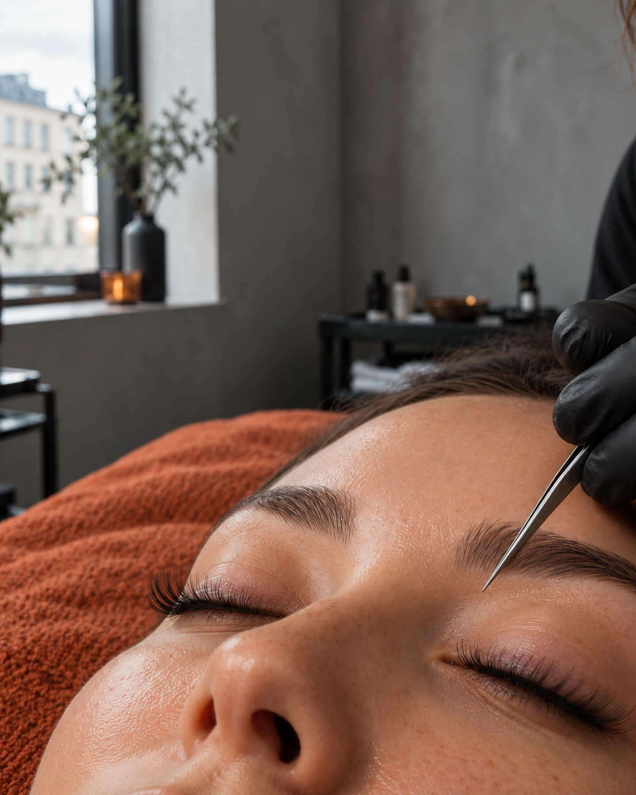
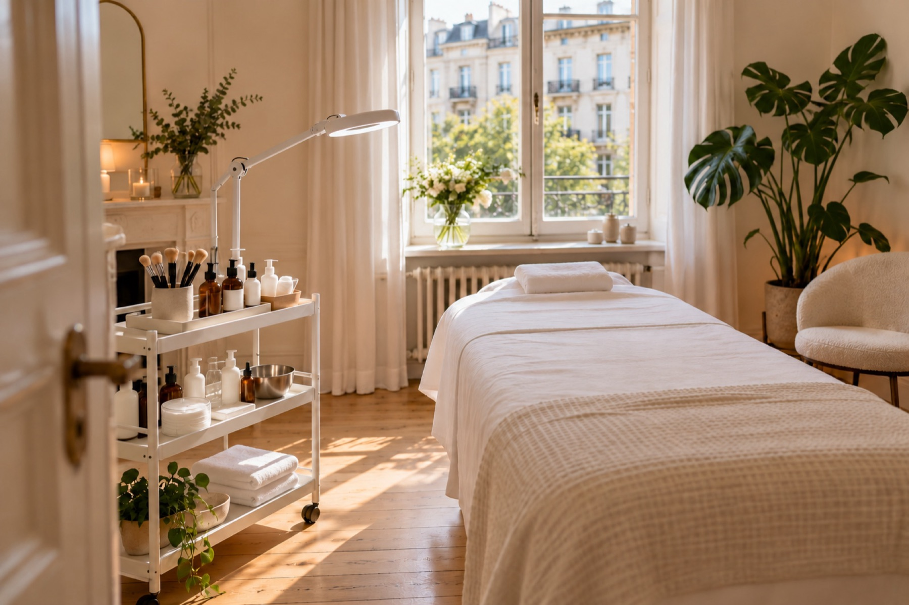
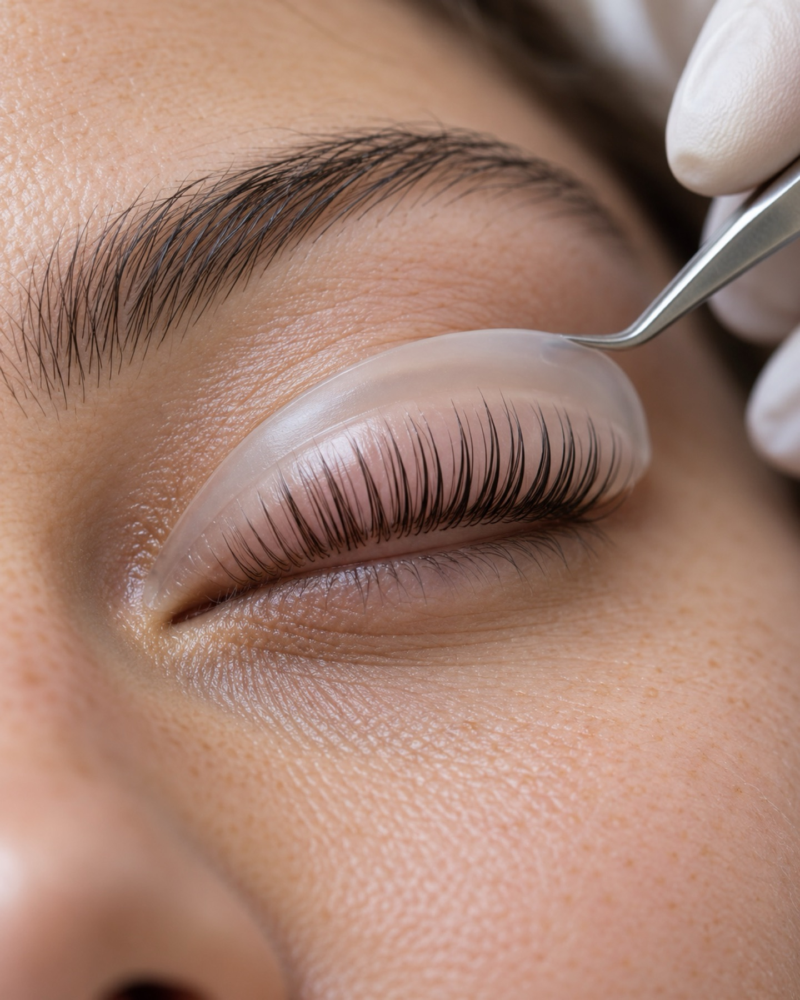
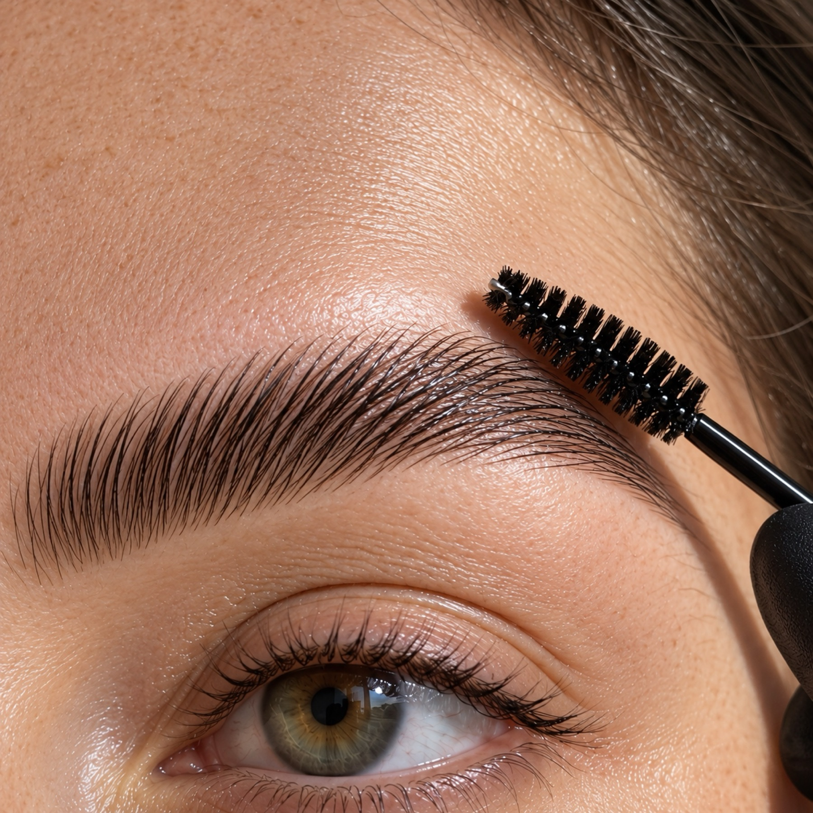
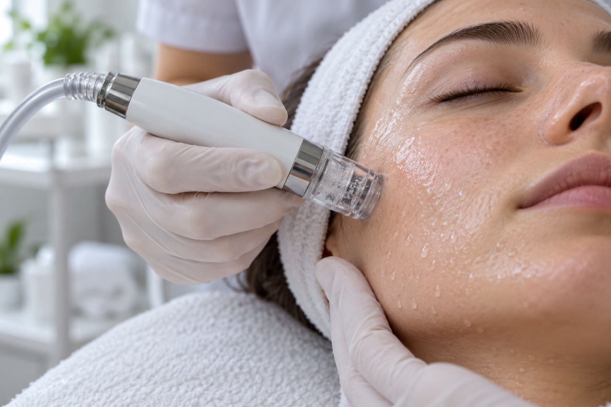

Klare Kante.Weicher Blick.
Wimpernlifting, Browlifting und Aqua Facial in Berlin-Tempelhof. Wir betonen, was schon da ist.
Termin per WhatsApp
Leistungen
01Aqua Facial / HydraFacial
Mehrere Schritte an einem Termin: Die Haut wird gereinigt, sanft gepeelt und mit Feuchtigkeit versorgt. Danach wirkt sie frischer.
02Wimpernlifting
Ihre eigenen Wimpern werden in Schwung gebracht und gefärbt. Der Blick wirkt offener. Eine Verlängerung ist dafür nicht nötig.
03Browlifting / Brow Lamination
Die Brauenhaare werden in Form gebracht und fixiert. So liegt die Linie gleichmäßig und bleibt gepflegt.
04Mikrodermabrasion
Ein mechanisches Peeling: Abgestorbene Hautschüppchen werden abgetragen, das Hautbild wird glatter. Pflege nimmt die Haut danach besser auf.
05Bodyforming / Körperbehandlungen
Körperbehandlungen, Bodyforming eingeschlossen. Was zu Ihnen passt, klären wir vorher in einem Gespräch.
06Individuelle Gesichtsbehandlungen
Wir sehen uns Ihre Haut an, hören Ihre Wünsche und legen dann fest, was gemacht wird. Erst sprechen, dann entscheiden.

Über das Studio
Beauty Lone ist ein kleines Studio in der Attilastraße 177 in Tempelhof. Bei uns wird zuerst geredet.
Bevor es losgeht: Was wünschen Sie sich, was passt zu Ihnen? Ohne Eile, in einem ruhigen Raum.
Wimpern, Brauen, Gesichtspflege: Wir arbeiten genau und verändern nicht mehr als nötig.
Warum Beauty Lone
Beratung vorab
Wir besprechen Ihre Wünsche, bevor wir beginnen.
Ruhiger Raum
Sie müssen nicht gleich loslegen.
Genaue Arbeit
Kleine Schritte, natürliches Ergebnis.
Termin per WhatsApp
Eine Nachricht genügt, wir melden uns.
Ablauf Ihres Termins
- 1
Nachricht schreiben
Schreiben Sie uns per WhatsApp, welche Behandlung Sie interessiert. Wir finden gemeinsam einen Termin.
- 2
Beratung vor Ort
Wir sprechen über Ihre Wünsche und Ihre Haut und entscheiden gemeinsam.
- 3
Behandlung und Pflegetipps
Zum Schluss sagen wir Ihnen, wie Sie das Ergebnis zu Hause pflegen.
Ergebnisse



Beispielbilder
„Ich wurde vorher richtig gut beraten und habe mich die ganze Zeit wohlgefühlt.“
Sabine K.
„Meine Brauen sehen endlich ordentlich aus und trotzdem natürlich.“
Melanie T.
Häufige Fragen
Wie bereite ich mich vor?
Kommen Sie am besten ungeschminkt. Bei Fragen zu Ihrer Haut oder Allergien sagen Sie uns bitte vorab Bescheid.
Wie lange dauert eine Behandlung?
Das hängt von der Behandlung ab. Die ungefähre Dauer nennen wir Ihnen bei der Terminvereinbarung.
Was muss ich nach der Behandlung beachten?
Pflegetipps bekommen Sie nach jeder Behandlung mit. Für Wimpern und Brauen heißt das meist: in den ersten Stunden Wasser und Reiben vermeiden.
Was gilt, wenn ich absagen muss?
Bitte schreiben Sie uns so früh wie möglich per WhatsApp, damit wir den Termin neu vergeben können.